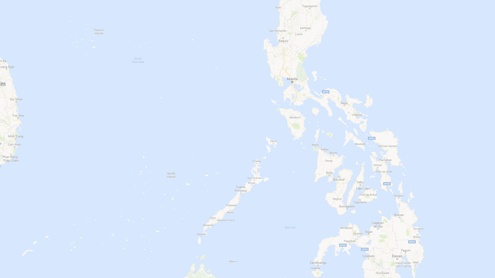
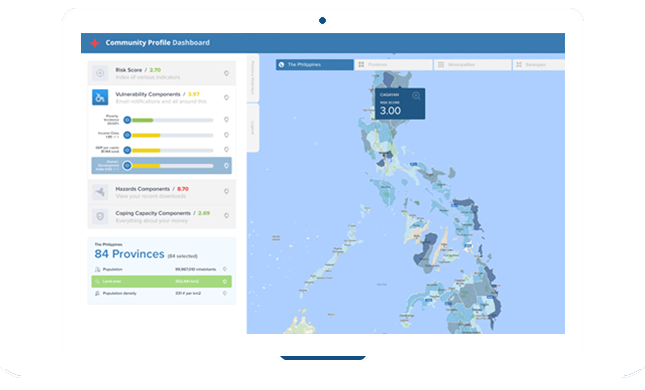

<!DOCTYPE html>
<html lang="en">
<head>
    <meta charset="utf-8">
    <meta http-equiv="X-UA-Compatible" content="IE=edge">
    <meta name="viewport" content="width=device-width, initial-scale=1">
    <meta name="description" content="">
    <meta name="author" content="">
    <title>Community Profiles Dashboard - Homepage</title>
    <!-- Bootstrap CSS -->
    <link href="lib/bootstrap/css/bootstrap.min.css" rel="stylesheet">
    <!-- MetisMenu CSS -->
    <link href="../vendor/metisMenu/metisMenu.min.css" rel="stylesheet">
    <!-- Custom CSS -->
    <link href="css/dashboards.css" rel="stylesheet">
    <!-- Custom Fonts -->
    <link href="lib/font-awesome/css/font-awesome.min.css" rel="stylesheet" type="text/css">

    <script src="lib/jquery/jquery.min.js" type="text/javascript"></script>
    <script src="js/jquery.tabSlideOut.v1.3.js"></script>
    <script src="js/slideout-panel.js"></script>


</head>
<body class="homepage">
  
  <div class="content-wrapper">
  <!-- Navigation -->
  <nav class="navbar navbar-default navbar-fixed-top navbar-inverse" role="navigation" style="margin-bottom: 0">

      <div class="navbar-header">
          <a class="navbar-brand" href="index.html">
            
            Community Profile <span class="title-hightlight">Dashboard</span></a>
      </div>
  </nav>
      <!-- end: navbar-header -->

      <!-- start: content -->
      <div class="content">
        <div class="container">

          <div class="home-content">

            <div class="row">
              <div class="col-md-6">
                <h2><span class="timer">41912</span> Communities Profiled</h2>
              </div>
              <div class="col-md-2">
                <a href="dashboard.html" class="btn btn-link" role="button">Go to prototype</a>
              </div>
              <div class="col-md-2">
                <a href="#" class="btn btn-link" role="button">How it works</a>
              </div>
              <div class="col-md-2">
              </div>
            </div>

            <div class="row">
              <div class="col-md-6">
                
              </div>
              <div class="col-md-6">
                <h3> About Community Profiles</h3>

                <p>Humanitarian organizations cannot help all out of their scarce resources, when a disaster relief or disaster risk-reduction program is carried out. Therefore they try to find and target those most in need. This beneficiary selection is currently a slow and possibly subjective process, largely because of a lack of data and the tools to interpret them.</p>

                <p>This solution aims to fill this information gap by finding and integrating all relevant open or closed data sources on a detailed geographical level, on indicators ranging from hazard exposure to vulnerability to coping capacity. Having these data together and easily accessible saves invaluable time when a disaster strikes. Furthermore, the indicators are combined into composite scores, enabling decision-makers to compare communities, thereby contributing to the process of beneficiary selection.</p>
              </div>
          </div>

          <div class="row">
            <div class="col-md-3">
              <h3><i class="glyphicon glyphicon-zoom-in title-icon"></i>Detail Level</h3>
              <p>This project aims to profile on a very detailed geographical or administrative level. Whereas similar initiatives might profile on a national or maybe regional level, we really go as deep as neighborhood or community level.</p>
            </div>
            <div class="col-md-3">
              <h3><i class="fa fa-globe title-icon"></i>Global scope</h3>
              <p>The scope of the Community Profiling project is global. Using global data sources as much as possible and using global definitions as much as possible. For now, the Philippines are chosen as the first pilot country.</p>
            </div>
            <div class="col-md-3">
              <h3><i class="fa fa-tachometer title-icon"></i>Indicators</h3>
              <p>The range of indicators included is meant to serve two purposes. First, to provide any basic and practical information that is needed when a disaster relief or disaster risk reduction program is being started. Second, we combine all relevant indicators in a composite score which enables decision-makers to compare communities. This can greatly contribute to the process of beneficiary selection (on a community level).</p>
            </div>
            <div class="col-md-3">
              <h3>Open Data</h3>
              <p>This project integrates a lot of open and closed data sources. The open data that is used is freely accessible. Please feel free to notify us of any data sources you think should be included. It will only make the product better.</p>
            </div>
          </div>

          </div>

        </div>
      </div>
      <!-- end: content -->


</div>
<!-- end: content wrapper -->


<!-- Bootstrap Core JavaScript -->
<script src="lib/bootstrap/js/bootstrap.min.js"></script>

</body>
</html>
